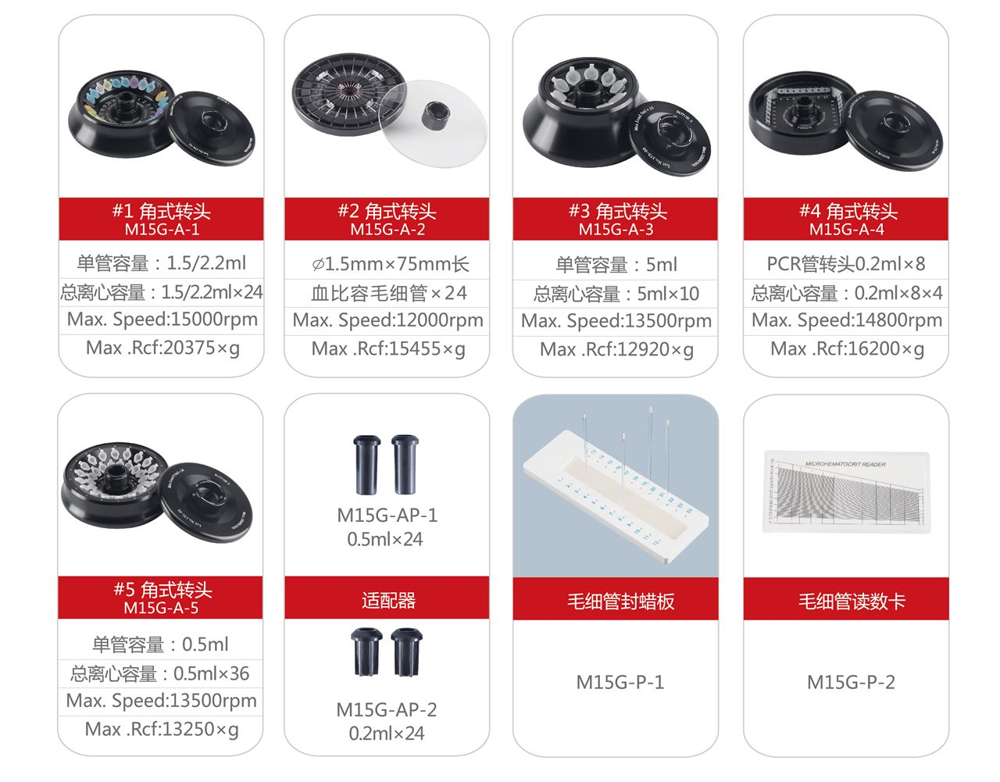
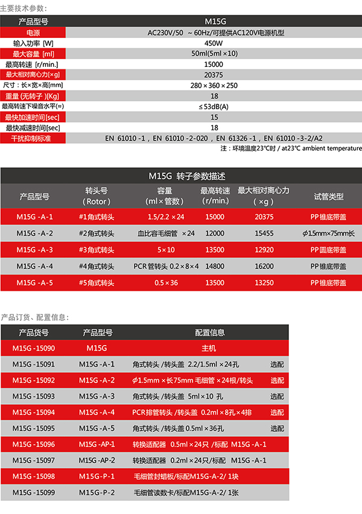

全国统一热线：86-021-57516069

M15G 空冷型台式台式高速离心机兼具强大的功能、高度的通用性、简便的操作性等优点，采用最新的控制技术、且质量可靠、性能优越，而广泛用于医学实验室、生化和分子生物学研究和工业实验室的常规分析，在遗传基因、蛋白核酸以及PCR产物等实验研究中更为显著。台式高速离心机强制风冷技术，显著有效地降低温升确保样品不被破坏；转头自动ID识别系统，确保实验安全高效；台式高速离心机 高速离心机厂家
离心腔外设有隔离层可充分吸收噪音，降低振动，给实验人员一份宁静
| 产品型号 | M15G | |||||||||
| 电源 | AC230V/50～60Hz | |||||||||
| 输入功率[W] | 450W | |||||||||
| 最大容量[ml] | 50ml(5ml×10) | |||||||||
| 最高转速[r/min.] | 15000 | |||||||||
| 最大相对离心力[×g] | 20375 | |||||||||
| 尺寸：长×宽×高[mm] | 280×360×250 | |||||||||
| 重量(无转子)[Kg] | 17 | |||||||||
| 最高转速下噪音水平(≈) | ≤56dB(A) | |||||||||
| 最快加速时间[sec] | 16 | |||||||||
| 最快减速时间[sec] | 18 | |||||||||
| 干扰抑制标准 | EN 61010-1，EN 61010-2-020，EN 61326-1，EN 61010-3-2/A2 | |||||||||
| 注：环境温度23℃时／at23℃ ambient temperature | ||||||||||
| M15G转子参数描述 | ||||||||||
| 产品型号 | 转头号 （Rotor） | 容量 （ml×管数） | 最高转速 （r/min.） | 最大相对离心力（×g） | 试管类型 | |||||
| M15G-A-1 | #1角式转头 | 1.5/2.2×24 | 15000 | 20375 | PP锥底带盖 | |||||
| M15G-A-2 | #2角式转头 | 毛细血比容管×24 | 12000 | 15455 | 直径1.5mm | |||||
| M15G-A-3 | #3角式转头 | 5×10 | 13500 | 12920 | PP圆底带盖 | |||||
| M15G-A-4 | #4角式转头 | PCR管转头0.2×8×4 | 14800 | 16200 | PP锥底带盖 | |||||
| M15G-A-5 | #5角式转头 | 0.5×36 | 13500 | 13250 | PP锥底带盖 | |||||
| 产品货号 | 产品型号 | 配置信息 | ||||||||
| M15G-15090 | M15G | 主机 | ||||||||
| M15G-15091 | M15G-A-1 | 角式转头/转头盖 2.2/1.5ml×24孔 选配 | ||||||||
| M15G-15092 | M15G-A-2 | 直径1.5mm×长75mm毛细管×24根/转头 选配 | ||||||||
| M15G-15093 | M15G-A-3 | 角式转头/转头盖 5ml×10孔 选配 | ||||||||
| M15G-15094 | M15G-A-4 | PCR排管转头/转头盖 0.2ml×8孔×4排 选配 | ||||||||
| M15G-15095 | M15G-A-5 | 角式转头/转头盖0.5ml×36孔 选配 | ||||||||
| M15G-15096 | M15G-AP-1 | 转换适配器 0.5ml×24只 /标配 M15G-A-1 | ||||||||
| M15G-15097 | M15G-AP-2 | 转换适配器 0.2ml×24只/标配 M15G-A-1 | ||||||||
| M15G-15098 | M15G-P-1 | 毛细管封蜡板/标配M15G-A-2/ 1块 | ||||||||
| M15G-15099 | M15G-P-2 | 毛细管读数卡/标配M15G-A-2/ 1张 | ||||||||

 打印当前页
打印当前页 免费咨询：86-021-57516069
免费咨询：86-021-57516069 发邮件给我们：mag@magal.cn
发邮件给我们：mag@magal.cn 在线客服
在线客服